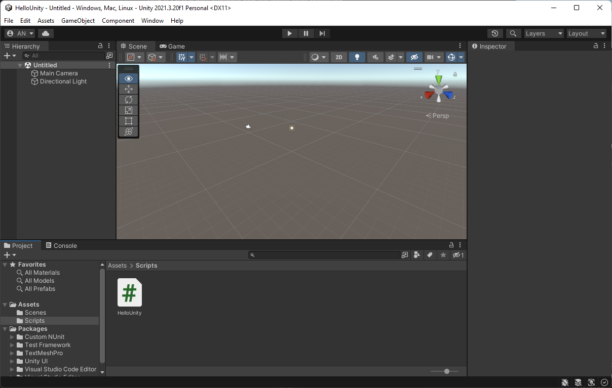
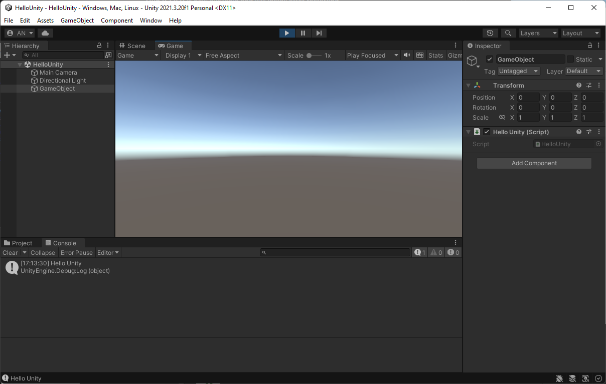
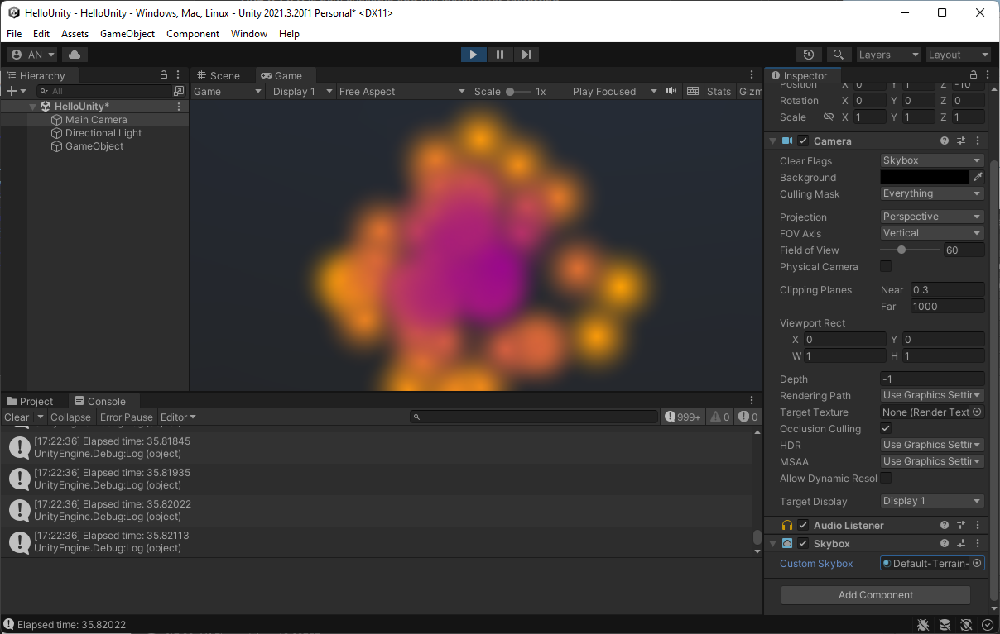

Assignment 01: Hello CS283!
Due Friday, September 6, before midnight
The goals for this assignment are:
-
Try slack
-
Sign-up for Github
-
Look at the website
-
Start using Unity
1. Try slack
I will be inviting you all to join the course slack channel. In the introduction channel, say and introduce yourself:
-
What is your preferred name and pronouns?
-
Share with us your favorite games
-
Share with us why you are taking this course and what you hope to accomplish in it
We will use Slack for
-
Course announcements
-
Links to zoom
-
Questions and errata for assignments and labs
You can also use Slack to talk directly to me and the TAs, or even to each other!
2. Sign-up for Github
Please go to github.com and register. We will use github for assignments. Email the instructor (anormoyle at brynmawr.edu) with your github username.
*You will need to setup an SSH key for Github. Click here for instructions.
We have made the decision to open-source our assignments and projects for this class. The benefit of this decision is that you will have a portfolio of work that you can easily keep and share.
Having open-source assignments means that your work is publicly viewable, should someone search for it. It also means that if you copy other people’s work, it is in plain view for anyone to see! We will compare assignments and expect everyone to adhere to the honor code at Bryn Mawr and Haverford.
You will discover that there are many open-source coding resources available online. Some of it is boiler plate and intended to be re-used, such as when we use API documentation in order to use a function. Any non-trivial code (longer than a single statement) that you re-use in your own program should be attributed. In this class, 99% of all code should be your own.
3. Read the class web pages
Start by reading through all of the class webpage! Bookmark this page on your browser, or use some other method that helps you keep this information handy. All course materials will be posted on the course webpage!
Pay special attention to the Schedule.
4. Hello Unity
Verify that you can use Github, git, and Unity. The instructions for this assignment assumes you are using a lab machine in Park 231.
| Lab machines use your Bryn Mawr or Haverford logins. |
| CS lab machines are dual boot, meaning they can load either Windows or Ubuntu. If the machine has a Ubuntu login screen, use the button on the top right to restart the machine with windows. |
Fork the repository
From your browser, fork the repository from here:
Fork is a button located on the top, right on Github. You now have a copy of the class repository in your own Github account.
Clone the repository
From your own account, clone the repository you just forked. Use your browser to visit an URL that looks something like the following
git@github.com:<YOURUSERNAME>/cs283-f24-assignments[]We will use Git Bash to clone the repository. You can open Git Bash using the shortcut on the desktop. You know have a terminal open to your personal, shared storage space at Bryn Mawr College (drive H:).
From your browser, use the "Code" button on Github to copy the URL. Then run the following command from terminal.
git clone git@github.com:<YOURUSERNAME>/cs283-f24-assignments[]You know have a version of the class resources in your local storage.
Open Unity
From the desktop, open the Unity Hub. Sign-in with your personal Unity account. If you don’t have one already, create one.
From Unity Hub, use the Add button to browse to the Unity project "HelloUnity" stored under you assignments. This will open the Unity project. Sadly, this may take a very long time. Once Unity opens, you will see an empty project.

Open the scene, "HelloUnity". Press play. You should see the message "Hello Unity!" printed to the console.

Do the following:
-
Add a particle effect to the GameObject in the scene. Select the GameObject and add a new component. Select "Particle Effect".
-
Modify the script
HelloUnity.csto print the time each frame. The current time is stored in the Unity global variable, calledTime.realtimeSinceStartup -
Modify the README to contain a GIF of you particle system
| Try creating a cool particle system. This tutorial can give you ideas. |
| If your editor does not come up when you open a script, change your editor in Edit/Preferences/External Tools |

What to hand in
-
Email the instructor with your Github name
-
Join the class slack and introduce yourself
-
Make your Unity edits and check them into Github
-
Update your Github README with a video or GIF
Don’t forget to commit your changes and then push them to Github. Using Git Bash,
run the following command inside your HelloUnity directory.
$ cd HelloUnity
$ git add .
$ git commit -m "Finished HelloUnity"
$ git pushRun git status to check the result of the previous git command.
Check the Github website to make sure that your program uploaded correctly.
Assignment rubrics
Grades are out of 4 points.
-
Github setup (1 points)
-
Slack setup and introduction (1 points)
-
Unity (2 points)
Submission rubrics
For full credit, your Unity programs must
-
be feature-complete,
-
load out-of-the-box,
-
follow the C# coding style, and
-
run on the lab Windows machines.
-
Some credit lost for missing features or bugs, depending on severity of error
-
-12.5% for style errors. See the class coding style here.
-
-100% for failure to checkin work to Github
-
-100% for failure to build and run on the lab Windows machines